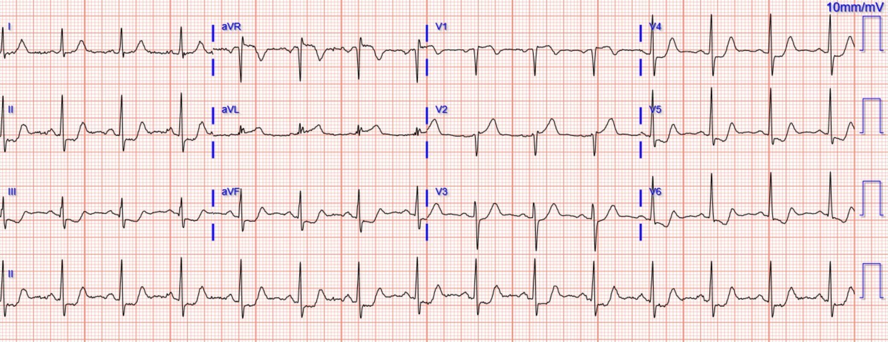
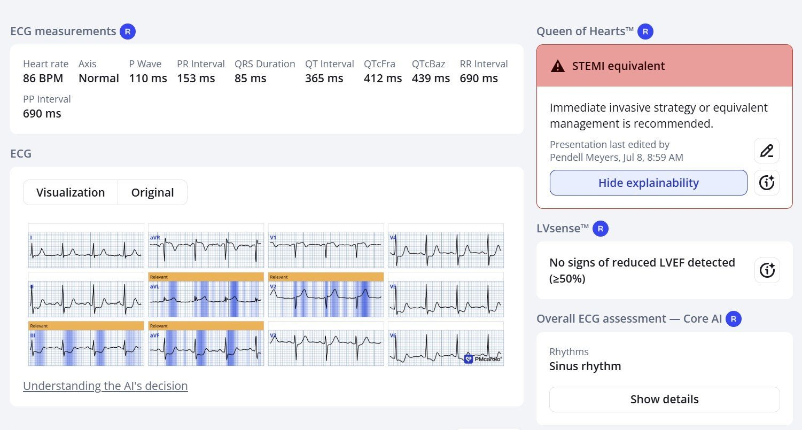
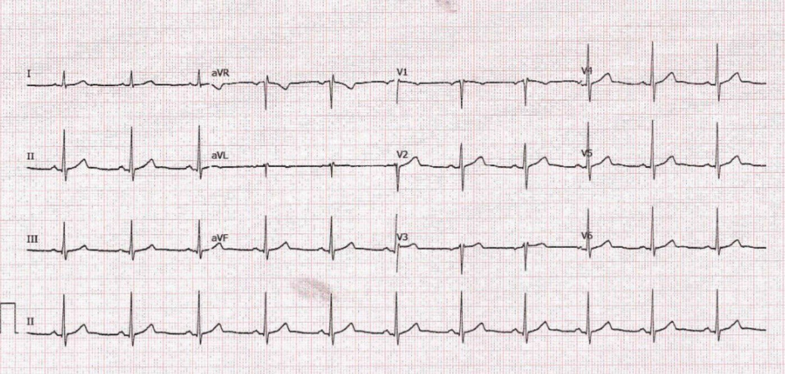
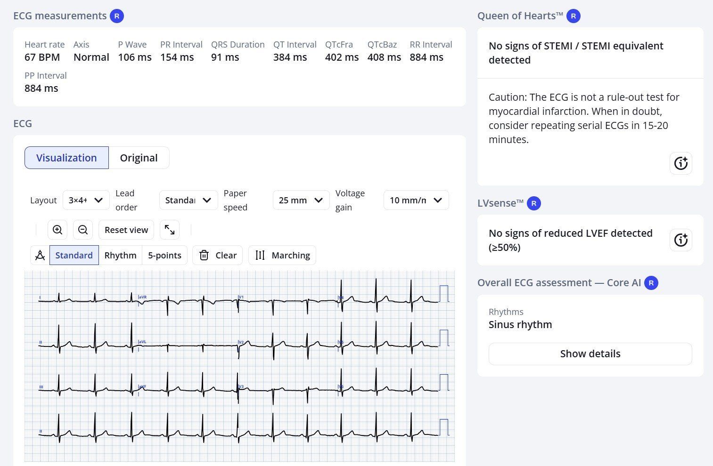
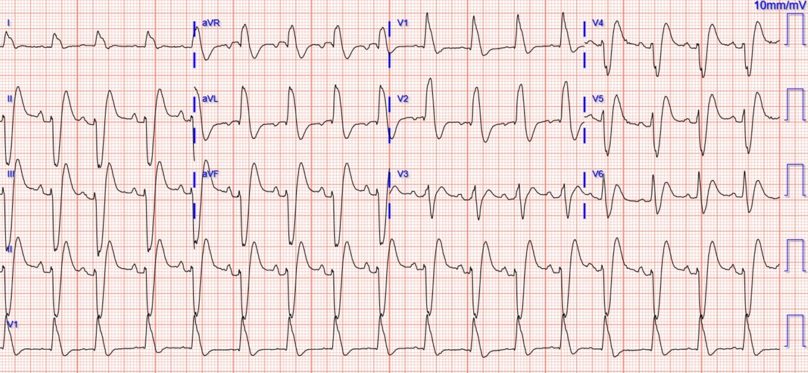
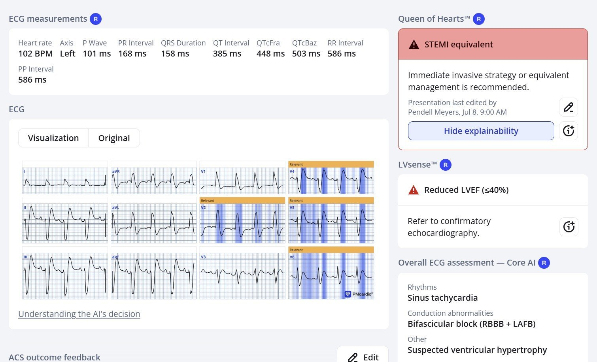
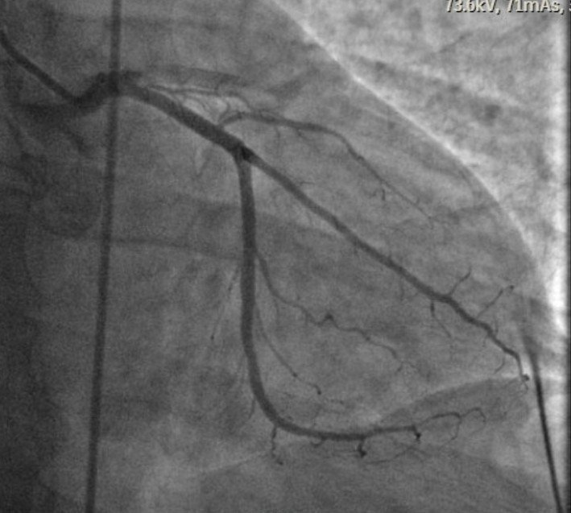
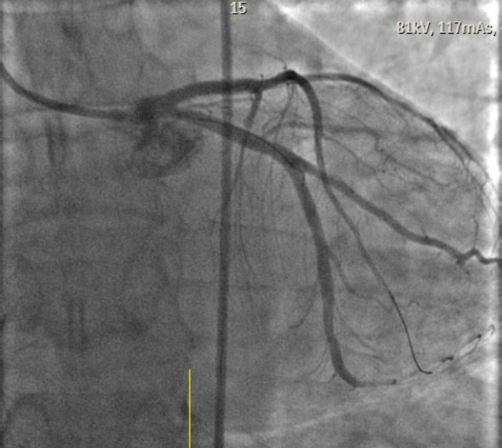
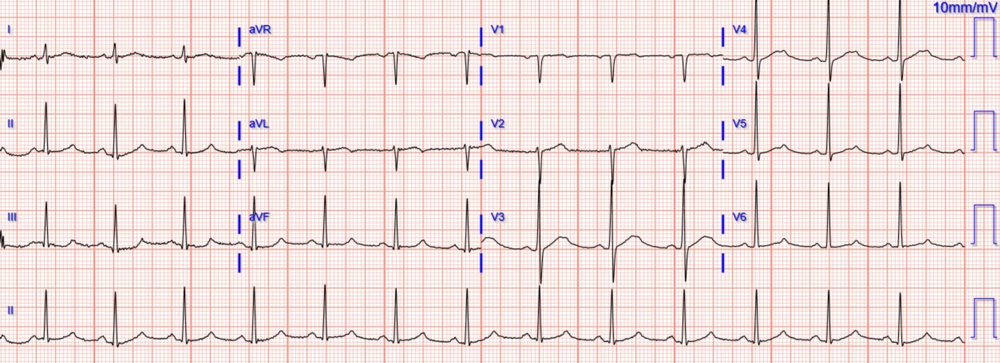
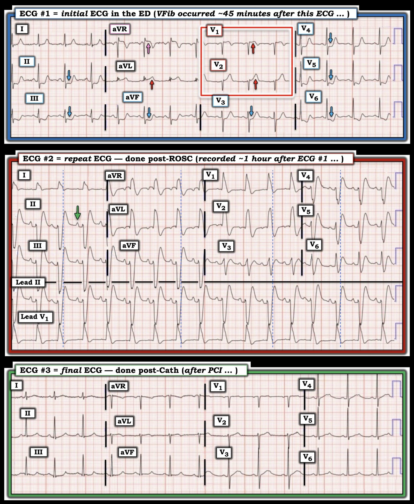

13/07/2026 — Một người đàn ông ở độ tuổi 50 bị đau ngực cấp. Hãy xem điều gì xảy ra khi điện tâm đồ “Không phải STEMI”
Bản dịch tiếng Việt của bài "A man in his 50s with acute chest pain. See what happens when it is “Not a STEMI”" – Dr. Smith’s ECG Blog. Giữ nguyên toàn bộ 11 hình ảnh của bản gốc.
Bài viết của Pendell Meyers, tất nhiên có bình luận của Smith. Do một người giấu tên gửi
Một người đàn ông ở độ tuổi 50 đang dắt chó đi dạo vào sáng sớm thì đột ngột bị đau ngực cấp.
Ông đến khoa cấp cứu (ED) và được ghi điện tâm đồ lúc 0658:


Bạn nghĩ gì?
Nhịp xoang, QRS về đại thể bình thường, với các dấu hiệu chẩn đoán tắc LAD cấp: hình ảnh xoáy trước tim (precordial swirl) (ST chênh lên (STE) ở V1-V2, sóng T tối cấp ở V2, ST chênh xuống ở các chuyển đạo trước tim bên V5-6), kèm sóng T tối cấp (HATW) ở aVL với ST chênh xuống soi gương ở các chuyển đạo dưới. Đây là sự pha trộn giữa dấu hiệu “Cờ Nam Phi” (South African Flag) và xoáy trước tim (Precordial Swirl), cả hai đều chỉ điểm tắc đoạn gần LAD. Bạn cũng có thể mô tả nó là sự pha trộn giữa hình ảnh tắc LAD chồng lên hình ảnh thiếu máu cục bộ dưới nội tâm mạc.
Xem: Precordial Swirl — 20 cases of Swirl or Look-Alikes
Dù sao đi nữa, hình ảnh này rất đặc hiệu cho tắc LAD, mặc dù nó không phải là “STEMI” theo mô hình STEMI/NSTEMI quy ước (hãy nhớ, NSTEMI là một chẩn đoán vô giá trị).
Đây là nhận định của Queen of Hearts. Lưu ý rằng Queen không đánh dấu ST chênh xuống ở V4-6, và tôi tin rằng đó là vì hình ảnh này có thể chỉ do thiếu máu cục bộ dưới nội tâm mạc đơn thuần (cũng nguy hiểm, nhưng không nhất thiết do tắc hoàn toàn động mạch vành, thậm chí không nhất thiết do ACS). Điều Queen thấy được là ST chênh lên ở aVL kèm ST chênh xuống soi gương ở các chuyển đạo dưới, và sóng T tối cấp ở V2:


Có sẵn một điện tâm đồ nền dành cho những ai chưa quen với các hình ảnh OMI và vì thế có thể cần đến nó:




Đáng tiếc, điện tâm đồ bị đánh giá là “không phải STEMI”, và bệnh nhân được cho dùng aspirin nhưng không có kế hoạch điều trị tái tưới máu cấp cứu nào ở lần đánh giá ban đầu. Cũng có ghi nhận rằng cơn đau của ông đã giảm so với lúc khởi phát.
Khoảng 45 phút sau, bệnh nhân bị ngừng tim do rung thất.
Ông được khử rung và đạt tái lập tuần hoàn tự nhiên.
Đây là điện tâm đồ của ông khoảng 10 phút sau đó:


Hình ảnh RBBB/LAFB mới xuất hiện là một đặc điểm nguy cơ cực kỳ cao của OMI do LAD.
Smith: Hãy chú ý xem thật khó nhận ra các dấu hiệu OMI biết bao khi có blốc nhánh phải và blốc phân nhánh trái trước (RBBB + LAFB). Đây là một hình ảnh vượt xa khuôn khổ STEMI/NSTEMI, cực kỳ nguy hiểm và khó nhận ra. Bất cứ khi nào bạn thấy RBBB + LAFB trong OMI cấp, bệnh nhân hoặc sắp ngừng tim, hoặc vừa mới được hồi sinh, hoặc đang sốc tim, vì hình ảnh này đi kèm với tắc thân chung động mạch vành trái hoặc đoạn gần LAD và một vùng cơ tim thiếu máu cục bộ rất lớn.
Xem các bài sau về RBBB + LAFB:
Wide Complex Tachycardia; It’s really sinus, RBBB + LAFB, and massive ST elevation
68 minutes with chest compressions, full recovery. Plus recommendations from a 5-member panel on cardiac arrest. (Khi tôi cho bác sĩ can thiệp xem ca này và nói “Tắc đoạn gần LAD”, ông ấy chỉ đảo mắt và nói “Có thể!”
Xem ca 2 và ca 6 tại đây: How does Acute Total Left Main Coronary occlusion present on the ECG?
What, besides large anterior OMI, is so ominous about this ECG?
Và còn nhiều bài khác: RBBB with LAFB (Left Anterior Fascicular Block)
Queen of Hearts đưa ra chẩn đoán vì Queen thấy sóng T ở V4-6 là sóng T tối cấp


Troponin ban đầu lấy tại khu phân loại có kết quả 50 ng/L. Nếu đây là xét nghiệm hs-cTnI Abbott Architect, giá trị này thấp hơn ngưỡng 52 ng/L của Hội Tim mạch châu Âu (ESC) để chẩn đoán nhồi máu cơ tim cấp típ I với PPV ~70%, dựa trên troponin đầu tiên. Troponin đầu tiên không đáng tin cậy để chẩn đoán nhồi máu cơ tim, kể cả nhồi máu cơ tim do tắc động mạch vành cấp!
Sau cơn ngừng tim và điện tâm đồ tiếp theo, cuối cùng ông mới được xem là “có STEMI”, và được đưa đến phòng thông tim (cath lab):


LAD tắc ở đoạn gần (hình trên), đã được mở thông (hình dưới).


Điện tâm đồ sau thông tim:


Phân suất tống máu (EF) sau đó là 35% kèm rối loạn vận động thành trước.
Troponin lần hai vào khoảng 7000 ng/L, và không đo thêm lần nào nữa.
Bệnh nhân sống sót đến khi xuất viện, nhưng kết cục lâu dài chưa rõ.
Smith: Chậm trễ tái tưới máu lâu như vậy trong OMI do tắc hoàn toàn đoạn gần LAD rất có khả năng dẫn đến một vùng cơ tim nhồi máu lớn và phân suất tống máu (EF) thấp vĩnh viễn. Bệnh nhân này có lẽ bị suy tim phân suất tống máu giảm (HFrEF) vĩnh viễn, vốn có tỷ lệ tử vong 5 năm và 10 năm cao, và gây khổ sở do hạn chế sinh hoạt và khó thở.
Hãy nhớ biểu đồ này: 80% lợi ích của điều trị tái tưới máu bị mất đi ở thời điểm 4 giờ sau khi khởi phát đau ngực.

Gersh BJ, Stone GW, White HD, Holmes DR Jr. Pharmacological facilitation of primary percutaneous coronary intervention for acute myocardial infarction: is the slope of the curve the shape of the future? Tạp chí JAMA [Internet], năm 2005;293(8):979–86. Truy cập tại: http://www.ncbi.nlm.nih.gov/entrez/query.fcgi?cmd=Retrieve&db=PubMed&dopt=Citation&list_uids=15728169
Bài học:
Nếu bạn muốn điều trị tốt nhất cho bệnh nhân nhồi máu cơ tim cấp, bạn phải thành thạo việc đọc điện tâm đồ, hoặc sử dụng một mô hình AI đọc điện tâm đồ chính xác (mô hình duy nhất hiện có là mô hình AI PMCardio Queen of Hearts, và chúng tôi hy vọng nó sẽ sớm được FDA phê duyệt). Việc đào tạo thông thường và các hướng dẫn hiện hành là không đủ.
Smith: Tôi tin rằng con người gần như không thể chính xác bằng PMCardio Queen of Hearts. Tôi tin điều này vì tôi đã giảng dạy nội dung này suốt 25 năm và nhận thấy con người đơn giản là không thể học nó một cách đầy đủ. Việc này tốn quá nhiều thời gian và còn đòi hỏi một năng khiếu đặc biệt để nhận ra những hình thái sóng tinh tế. Bạn nên biết rằng tôi sở hữu cổ phần trong công ty, nhưng toàn bộ hoạt động giảng dạy và nghiên cứu của tôi trong hơn 35 năm qua đều không nhận thù lao hay tài trợ dưới bất kỳ hình thức nào. Tôi làm việc này để cứu người, không phải để kiếm tiền. Động lực để tôi quảng bá Queen là để cứu sống người bệnh và cứu cơ tim.
= = =
==================================
BÌNH LUẬN CỦA TÔI, bởi KEN GRAUER, MD (13/7/2026):
Tôi thấy diễn tiến tuần tự của 3 điện tâm đồ trong ca hôm nay thật hấp dẫn — đồng thời khác với diễn biến thông thường của một OMI cấp đang diễn ra. Vì thế — có những bài học quan trọng cần rút ra!
- Để thuận tiện so sánh 3 điện tâm đồ liên tiếp này — tôi đã đặt chúng cạnh nhau trong Hình 1.
= = =
Điện tâm đồ Ban đầu …
“Thông điệp cần nhớ” từ điện tâm đồ #1 — là ở một người trưởng thành tuổi ngoài 50 đến khám vì CP (đau ngực) cấp đột ngột — chúng ta phải nhận ra trong vòng vài giây rằng cần thông tim ngay! Tôi đã đánh dấu các dấu hiệu MẤU CHỐT trong Hình 1:
- Nhịp xoang tần số ~85/phút. Các khoảng và trục bình thường. Không có lớn buồng tim.
- Dấu hiệu “đập vào mắt” được làm nổi bật bằng các mũi tên XANH LAM trong Hình 1, cho thấy ST chênh xuống rõ rệt ở nhiều chuyển đạo. Đặc biệt đáng lo ngại là ST chênh xuống này dốc xuống đột ngột ở chuyển đạo III,aVF; và ở V5,V6 — kèm phần cuối sóng T dương ở tất cả các chuyển đạo có mũi tên XANH LAM. Ở một bệnh nhân CP mới xuất hiện — các dấu hiệu này gợi ý một OMI cấp đang diễn tiến cho đến khi chứng minh được điều ngược lại (điều chỉ có thể làm được bằng cách thông tim ngay).
- Theo Dr. Meyers — việc định vị động mạch “thủ phạm” ở đoạn gần LAD được gợi ý bởi sóng ST-T tối cấp ở chuyển đạo V1,V2 (trong hình chữ nhật ĐỎ).
- Sóng T dương “đồ sộ” quá mức ở chuyển đạo V2 rõ ràng không tương xứng với biên độ nhỏ của sóng S ở chuyển đạo này.
- Mặc dù thay đổi ST-T tinh tế hơn ở chuyển đạo V1 — vẫn có ST chênh lên tại điểm J bất thường (xét đến biên độ nhỏ của sóng S ở chuyển đạo này) — kèm đoạn khởi đầu ST thẳng đuỗn và sóng T đảo ngược sâu quá mức. Theo Dr. Meyers — khi đi kèm ST chênh xuống ở các chuyển đạo ngực bên, các dấu hiệu này phù hợp với hình ảnh Xoáy trước tim (Precordial Swirl) (Xem Bình luận của tôi ở cuối trang trong bài ngày 15/10/2022 — để biết thêm về cách nhận ra các đặc điểm của “Swirl” ở các chuyển đạo V1,V2 và V5,V6).
- Dr. Meyers cũng nhắc đến một thành phần DSI (thiếu máu cục bộ dưới nội tâm mạc lan tỏa) trên điện tâm đồ #1 — được gợi ý bởi ST chênh xuống ở nhiều chuyển đạo kèm ST chênh lên ở chuyển đạo aVR (mũi tên HỒNG ở chuyển đạo này). (Xem thêm về DSI trong Bình luận của tôi ở bài ngày 30/12/2025).
= = =
- Vượt ra ngoài phần cốt lõi: Thực ra — có thay đổi ST-T cấp ở cả 12 chuyển đạo! Mặc dù các bất thường ST-T có vẻ ít nổi bật hơn ở chuyển đạo I và chuyển đạo V3 — điều này không phải vì thay đổi ST-T “ít hơn” — mà là vì cả hai chuyển đạo này đều đại diện cho các vùng “chuyển tiếp”.
- Với chuyển đạo bên I — đây là vùng chuyển tiếp giữa sóng ST-T tối cấp ở chuyển đạo bên cao còn lại ( = chuyển đạo aVL) — và ST chênh xuống ngày càng nặng khi ta đi từ chuyển đạo II (ở +60 độ) — tới các chuyển đạo aVF và III (ở +90 rồi +120 độ).
- Với chuyển đạo trước V3 — đây là vùng chuyển tiếp giữa các thay đổi ST-T tối cấp ở các chuyển đạo V1,V2 — và ST chênh xuống ngày càng nặng khi ta đi từ chuyển đạo V4 — tới các chuyển đạo V5,V6.
ĐIỀU CỐT LÕI: Ngay cả trước khi xác định vị trí động mạch “thủ phạm” — từ bệnh sử (CP mới khởi phát) cùng độ sâu và hình dạng của ST chênh xuống được làm nổi bật bởi các mũi tên XANH LAM trên điện tâm đồ #1 — lẽ ra phải thấy rõ là cần thông tim ngay.
= = =
Hình 1: So sánh 3 điện tâm đồ trong ca hôm nay.


= = =
QRS giãn rộng do thiếu máu cục bộ …
Như Dr. Meyers đã mô tả trong phần bàn luận ở trên — bệnh nhân hôm nay bị rung thất (VFib) ~45 phút sau khi ghi điện tâm đồ #1.
- Điện tâm đồ #2 là điện tâm đồ ghi lại ~10 phút sau đó, sau khi ROSC thành công. Lưu ý rằng mặc dù giờ đây có QRS giãn rộng rõ rệt — nhịp trên điện tâm đồ #2 là nhịp xoang (dựa theo sóng P dương có mũi tên XANH LÁ ở chuyển đạo II).
- Dù rất dễ bị cám dỗ để gọi điện tâm đồ #2 đơn giản là RBBB/LAHB vì sóng R cao ở chuyển đạo V1 và QRS chủ yếu âm ở các chuyển đạo dưới (dạng blốc hai phân nhánh này là đặc điểm thường gặp của tắc cấp đoạn gần LAD nguy cơ cao) — tôi nghĩ rằng ngoài ra bản ghi này còn nhiều điều hơn thế.
- Ban đầu tôi đọc điện tâm đồ #2 là có các độ lệch đoạn ST chênh lên và chênh xuống dạng “vây cá mập” (shark fin) (Xem Bình luận của tôi trong bài ngày 8/8/2025 — để biết thêm về “vây cá mập”). Nhưng ST chênh lên và chênh xuống dạng “vây cá mập” xảy ra sau QRS — trong khi các đường chấm XANH LAM mà tôi thêm vào mỗi nhóm chuyển đạo trên điện tâm đồ #2 phân định chỗ có vẻ là điểm kết thúc của một phức bộ QRS rất rộng (tức là ≥0.15 giây).
- Do đó, điều chống lại các độ lệch đoạn ST dạng “vây cá mập” là thời điểm mà các đường chấm XANH LAM này gợi ý QRS kết thúc.
- Thời điểm này cũng chống lại hình ảnh kiểu hình sao chép Brugada (Brugada Phenocopy) do thiếu máu cục bộ ở các chuyển đạo V1,V2 — vì các đường chấm XANH LAM trên điện tâm đồ #2 gợi ý không có ST chênh lên ở các chuyển đạo V1,V2 (điều cần phải có để điện tâm đồ này biểu hiện hình ảnh Brugada).
- Mặc dù có thể có một thành phần blốc nhánh trên điện tâm đồ #2 — hình dạng vô định hình của QRS ở chuyển đạo V1 rõ ràng không điển hình cho RBBB (tức là nó không có chút gợi ý nào của hình thái ba pha ở V1 — cũng như không có sóng S tận rộng ở chuyển đạo I, và do đó trông giống LBBB hơn nhiều so với RBBB ở chuyển đạo chi này).
- Và không có lý do gì để nghĩ đến tăng kali máu xuất hiện đột ngột là nguyên nhân gây QRS giãn rộng trên điện tâm đồ sau hồi sinh này.
- Giả thuyết của tôi: Điều này khiến tôi đặt giả thuyết QRS giãn rộng do thiếu máu cục bộ là một lý do có thể hợp lý giải thích vì sao QRS vốn rất hẹp trên điện tâm đồ #1 — đột ngột trở nên rất rộng cùng lúc với sự xuất hiện rung thất. Có vẻ như việc QRS trở lại rất hẹp cũng đột ngột như vậy sau khi hết thiếu máu cục bộ trên điện tâm đồ #3 sau thông tim ủng hộ giả thuyết này.
- Rõ ràng — thường gặp hơn nhiều là RBBB/LAHB xuất hiện cấp (đôi khi kèm hình ảnh Brugada Phenocopy chồng lên) là lý do khiến QRS đột ngột giãn rộng cùng với diễn tiến của một OMI cấp.
- Dù vậy, sóng R lớn ở phía trước xuất hiện đột ngột (như thấy ở các chuyển đạo V1,V2 trên điện tâm đồ #2) đã được ghi nhận trong thiếu máu cục bộ cấp (Chugh và cs. — Cureus 9(4), 2017) — và QRS giãn rộng không liên quan đến blốc nhánh ít nhất đã được tạo ra trong phòng thí nghiệm (Demidova và cs. — J Electrocard 49(3):300-306, 2016).
= = =
Các bài học:
- Bất kể động mạch “thủ phạm” rốt cuộc là động mạch nào — ở một bệnh nhân CP nặng mới khởi phát (như trong ca hôm nay) — việc phát hiện ST chênh xuống dốc xuống tối cấp ở nhiều chuyển đạo trên điện tâm đồ ban đầu (như đã thấy trên điện tâm đồ #1) — là chỉ định thông tim ngay để xác định giải phẫu và tiến hành PCI.
- Ít nhất thì — Ghi lại điện tâm đồ trong vòng 10-15 phút tiếp theo. Làm vậy trong ca hôm nay gần như chắc chắn đã cho thấy diễn tiến ST-T “động” (dynamic), điều lẽ ra đã thúc đẩy thông tim sớm hơn (và có lẽ đã tránh được cơn rung thất).
- QRS giãn rộng do thiếu máu cục bộ theo một hình ảnh bất thường không phải do blốc nhánh, Brugada Phenocopy hay tăng kali máu (như thấy trên điện tâm đồ #2) — có thể xảy ra như một phần của quá trình đang diễn tiến của một OMI cấp. Những thay đổi QRST này thường nhanh chóng mất đi sau tái tưới máu (như được chứng minh bởi sự “xẹp xuống” của các thay đổi ST-T cấp thấy trên điện tâm đồ #1 — với việc QRS trở lại rất hẹp cùng tăng tiến sóng R bình thường ngay sau PCI, như trên điện tâm đồ #3).
= = =
= = =